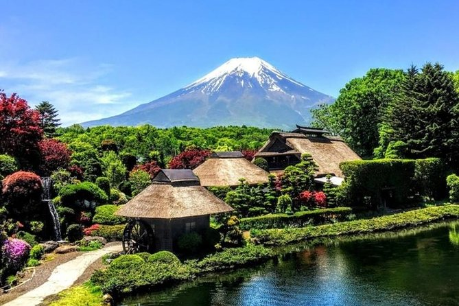

¡Descubre Japón con Nosotros! En nuestra agencia de viajes, te llevamos a explorar la fascinante cultura,
la rica historia y los paisajes impresionantes de Japón. Desde las bulliciosas calles de
Tokio hasta los tranquilos templos de Kioto, cada rincón del país del sol naciente
te espera con una experiencia única y enriquecedora. Déjanos llevar tus sueños de viaje a
la realidad y sumérgete en la belleza y la diversidad de Japón.
Tokio
Descubre la energía única de Tokio, donde la modernidad y la tradición convergen.
Shibuya, con su icónico cruce peatonal y su vida nocturna vibrante, es
una parada obligatoria. Mientras exploras esta animada ciudad, mantén los ojos abiertos,
podrías encontrar algo especial...

Monte Fuji
El Monte Fuji es el pico más alto de Japón y un símbolo icónico del país. Con su forma cónica perfecta y sus vistas impresionantes, el Monte Fuji atrae a excursionistas y amantes de la naturaleza de todo el mundo. Escalar el Fuji-san es una experiencia inolvidable.
Kioto
Kioto es una ciudad famosa por su rica historia y su belleza tradicional. Hogar de miles de templos, santuarios y jardines zen, Kioto ofrece un vistazo al Japón antiguo. Pasear por sus calles históricas te transportará a tiempos pasados.
Oportunidad especial
¿Eres fan de "Hunter x Hunter" o "Yu Yu Hakusho" de Yoshihiro Togashi,
de "Saint Seiya" de Masami Kurumada, o de "JoJo's Bizarre Adventure" de
Hirohiko Araki? ¡Tenemos una oportunidad especial para ti! Organizamos
encuentros exclusivos con uno de estos famosos mangakas, donde tendrás la
oportunidad de conocerlos, obtener autógrafos y tal vez incluso charlar
sobre sus obras maestras. No te pierdas esta oportunidad única de conocer a
tus héroes del manga en persona durante tu viaje a Japón.
Itinerario de 5 días y 4 noches en Japón
Día 1: Llegada a Tokio
- Llegada al aeropuerto de Haneda o Narita en Tokio.
- Explora Shibuya y cruza el famoso cruce peatonal.
- Cena en un restaurante local y disfruta de la animada vida nocturna de Shibuya.
Día 2: Explorando Tokio
- Visita al Palacio Imperial de Tokio y sus jardines.
- Almuerzo en un restaurante de ramen tradicional.
- Tarde libre para explorar Harajuku y Takeshita Street.
- Oportunidad especial, Encuentro con el mangaka elegido: Uno de los participantes recibirá un dibujo especial del artista.
Día 3: Excursión al Monte Fuji
- Ascenso al quinto nivel en el Monte Fuji para disfrutar de las vistas panorámicas.
- Visita al Lago Kawaguchi para relajarse y disfrutar del paisaje.
- Almuerzo en un restaurante con vistas al Monte Fuji.
Día 4: Viaje a Kioto
- Traslado en tren bala (Shinkansen) a Kioto.
- Almuerzo en un restaurante tradicional japonés (ryokan).
- Explora el barrio de Gion y sus calles históricas.
Día 5: Último día en Kioto y regreso
- Tiempo libre para compras y souvenirs en el distrito comercial de Nishiki Market.
- Oportunidad de pasear en kimono por Kioto y tomar fotos.
- Traslado al aeropuerto de Osaka para tomar el vuelo de regreso.
Costos de Viaje en Japón
- Traslados: Los traslados pueden costar entre 20 a 50 dólares por trayecto, dependiendo del medio de transporte elegido.
- Hospedaje: Los precios oscilan entre 50 a 150 dólares por noche, según la ubicación y categoría del alojamiento.
- Entradas a sitios turísticos: Las entradas suelen estar entre 10 a 20 dólares por persona.
- Alimentación: Se estima un gasto de 15 a 30 dólares por comida, dependiendo del lugar y el tipo de restaurante.